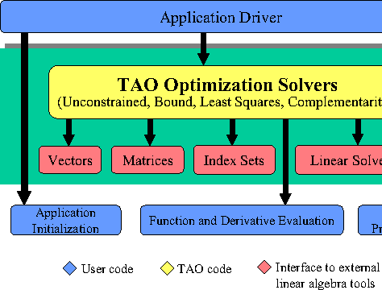

The TAO solvers use four fundamental objects to define and solve optimization problems: vectors, index sets, matrices, and linear solvers. The concepts of vectors and matrices are standard, while an index set refers to a set of integers used to identify particular elements of vectors or matrices. An optimization algorithm is a sequence of well defined operations on these objects. These operations include vector sums, inner products, and matrix-vector multiplication. TAO makes no assumptions about the representation of these objects by passing pointers to data-structure-neutral objects for the execution of these numerical operations.
With sufficiently flexible abstract interfaces, TAO can support a variety of implementations of data structures and algorithms. These abstractions allow us to more easily experiment with a range of algorithmic and data structure options for realistic problems, such as within this case study. Such capabilities are critical for making high-performance optimization software adaptable to the continual evolution of parallel and distributed architectures and the research community's discovery of new algorithms that exploit their features.
Our current TAO implementation uses the parallel system infrastructure and linear algebra objects offered by PETSc, which uses MPI [(ref using-mpi)] for all interprocessor communication. The PETSc package supports objects for vectors, matrices, index sets, and linear solvers.
The TAO design philosophy eliminates some of the barriers in using independently developed software components by accepting data that is independent of representation and calling sequence written for particular data formats. The user can initialize an application with external frameworks, provide function information to a TAO solver, and call TAO to solve the application problem.
The use of abstractions for matrices and vectors in TAO optimization software also enables us to leverage automatic differentiation technology to facilitate the parallel computation of gradients and Hessians needed within optimization algorithms. We have demonstrated the viability of this approach through preliminary interfacing between TAO solvers and the automatic differentiation tools ADIFOR and ADIC. We are currently working on developing TAO interfaces that use special problem features (for example, partial separability, stencil information) in automatic differentiation computations.